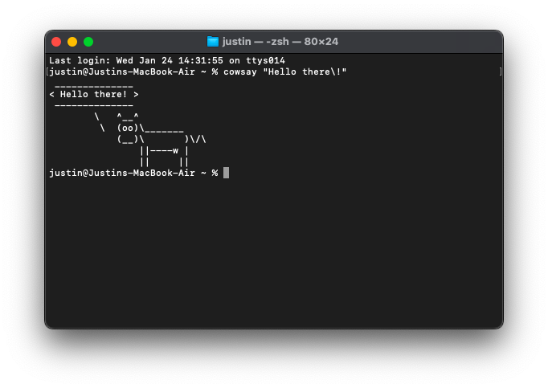

Hello! I'm Justin Fu. I have been programming for quite a while now. Recently, I've been learning about cybersecurity and hacking. You wouldn't believe how often people ask me to help them back their friend's Discord account or something. Don't worry though, I don't accept any of these requests. Most of what I've learned is all self-taught. I don't take any classes to build my skills.
I tend to learn new things ver quickly. For example, in most cases, I can learn a new programming language in less than half an hour, and master it in a day. Additionally, computer science is very interesting to me. I can put in all my effort into learning anything related to computers.
